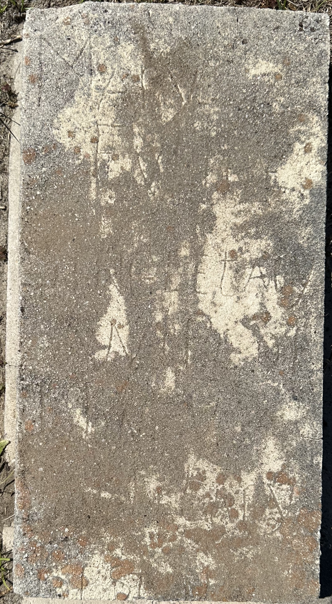
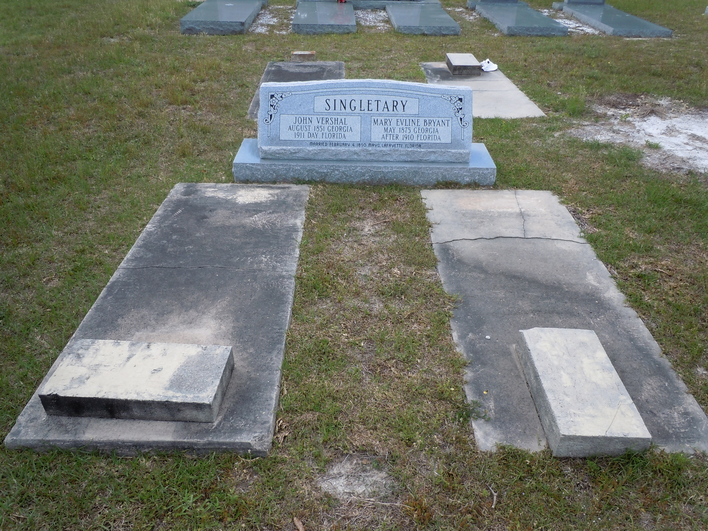

Mary Eveline Bryant
Born 1875
Life Events
Born: 1875
Family
Father: John Waters Bryan
Mother: Dolly Ann Leslie
Siblings
Spouse:
Children
Military Service
No military service information has been added.
Biography
Mary Eveline Bryant Singletary was born in May 1875 in Florida, the daughter of John Waters Bryan (1829–1878) and Dolly Ann Leslie (born 1834). Her surname appears as both Bryan and Bryant in historical and family research records. Her middle name has also appeared with different spellings, including Evline. A cemetery survey conducted in May 1968 by Moseley and Verrill identifies her as Mary Eveline Singletary, providing documentary support for the spelling Eveline used in this biography.
Mary was the youngest of six known children. Her siblings were John Bryant (1854–1928), Amanda M. Bryan (born 1856), Myram D. Bryan (1859–1916), Alexander Eugene Bryan (1869–1901), and Hattie Bryan (1871–1885). Her father died in 1878, when Mary was approximately three years old. In the 1880 United States Federal Census, five-year-old Mary was living in Columbia County, Florida, with her widowed mother, Dolly Bryant, and siblings Myram, Alexander, and Hattie. The census provides an early record of Mary's childhood and the family's circumstances following her father's death.
On February 4, 1890, Mary Bryant married John Vershal Singletary in Lafayette County, Florida. Their marriage license was issued on February 3, 1890, and the ceremony was performed by Reverend A. T. Wood. The marriage was recorded on March 3, 1890, in Lafayette County Marriage Record Book B, page 422. Mary was fourteen years old at the time of her marriage, while John was approximately thirty-eight. The couple established their home in Lafayette County, where John worked as a farmer.
Mary and John had six known children: Jessie Von Singletary (born 1891), Annie Evaline Singletary (1893–1951), George William Singletary Sr. (1895–1964), Albert Eugene Singletary (1899–1928), Alice Geneva Singletary (1904–1928), and Viola Singletary (1906–1987). Family research suggests that Jessie died relatively young, possibly during the 1910s, although his death date has not been independently verified. His original gravestone is located in the same cemetery as those of his parents.
The 1900 United States Federal Census recorded John and Mary living in Lafayette County with their four oldest children: Jessie, Annie, George, and Albert. Mary was recorded as twenty-five years old, born in May 1875. The couple reported ten years of marriage, consistent with their documented marriage in February 1890. Mary reported having given birth to four children, all four of whom were living. John continued to support the family through farming.
By the 1910 United States Federal Census, John and Mary's household included Annie, George, Albert, Alice, and Viola. Their oldest son, Jessie, then approximately eighteen or nineteen years old, was no longer living in the household. Mary reported having given birth to six children, all six of whom were living. This census is the last record examined during this research in which both John and Mary have been positively identified together.
The years following the 1910 census remain an important unanswered chapter in the family's history. A cemetery survey conducted in May 1968 recorded John V. Singletary's gravestone dates as 1859–1911, providing evidence that he died in 1911. Although the birth year of 1859 conflicts with earlier census records, particularly the 1860 census and the August 1851 birth date recorded in 1900, the death year of 1911 is provisionally accepted. No contemporary death certificate or other original death record has been located to independently confirm the date.
The 1920 United States Federal Census provides an important clue concerning the circumstances of the family after John's probable death. Their daughters Alice Geneva Singletary, approximately seventeen years old, and Viola Singletary, approximately fourteen years old, were living in the household of their older brother, George William Singletary, in Lafayette County, Florida. Both sisters were still minors. Their presence in George's household suggests that he may have assumed responsibility for his younger sisters following the death of their father and possibly their mother. However, the census does not establish whether George was their legal guardian or explain why the sisters were living with him.
Mary has not been positively identified in the 1920 census records examined during this research. Her absence from the household, together with the residence of her two youngest daughters with their older brother, provides circumstantial evidence that she may have died sometime between 1910 and 1920. It is also possible that her death occurred around the time of John's probable death in 1911, although no documentary evidence has been found to establish this. Other explanations for her absence from the household, including remarriage or residence elsewhere, cannot be ruled out. Despite efforts to locate a death certificate or other contemporary record, Mary's date and circumstances of death remain unknown.
Mary Eveline Bryant Singletary and John Vershal Singletary are buried at Bethel Creek Baptist Church Cemetery, formerly known as Bell's Mill Creek Cemetery, in Day, Lafayette County, Florida. Their original grave markers remain at the cemetery, although the inscriptions have deteriorated considerably. A cemetery survey conducted in May 1968 by Moseley and Verrill identified Mary Eveline Singletary as the wife of John V. Singletary but recorded no birth or death dates for her. The survey provides valuable historical documentation of the cemetery inscriptions before further deterioration occurred. A photograph of Mary's original gravestone taken in spring 2026 shows that the inscription is now extremely difficult to read.
In 2011, their great-grandson Arthur Singletary Sr. installed an additional shared headstone commemorating John and Mary. The death dates inscribed on this newer memorial reflect family research and have not been independently verified through contemporary records. The original grave markers, the 1968 cemetery survey, and the additional memorial together preserve important evidence of the family's burial history while also illustrating the uncertainties that remain concerning John and Mary's deaths.
Photos
No additional photographs have been added.
Grave & Burial

Bethel Creek Baptist Church Cemetery (formerly Bell's Mill Creek Cemetery), Day, Lafayette County, Florida

Bethel Creek Baptist Church Cemetery (formerly Bell's Mill Creek Cemetery), Day, Lafayette County, Florida
Sources
-
1880 United States Federal Census — Dolly Bryant Household
Type: census1880 United States Federal Census, Columbia County, Florida, Enumeration District 67, page 21 (stamped page 395), lines 41–45. The household is headed by Dolly Bryant, age 40, and includes her children Myram, age 20, Alec, age 11, Hattie, age 7, and Mary, age 5. Family research identifies Dolly as Dolly Ann Leslie, widow of John Waters Bryant, who died in 1878. The census documents the Bryant family's residence in Columbia County, Florida, and places Mary Eveline Bryant's approximate birth year around 1874–1875.
Location: Columbia County, Florida
Supports: Residence in 1880, Approximate birth year, Birthplace, Mother, Siblings, Household composition
-
1890 Marriage Record — John V. Singletary and Mary Bryant
Type: MarriageMarriage records from Lafayette County, Florida, document the marriage of John V. Singletary and Mary Bryant. The marriage license was issued on February 3, 1890, by County Judge Reuben B. Hill. The couple was married on February 4, 1890, by Rev. A. T. Wood. The license was filed for record on March 3, 1890, in Marriage Record Book B, page 422.
Location: Lafayette County, Florida
Supports: Marriage of John V. Singletary and Mary Bryant on February 4, 1890, Marriage location in Lafayette County, Florida, Mary's surname recorded as Bryant, Marriage performed by Rev. A. T. Wood, Marriage recorded in Book B, page 422
-
1900 United States Census - John Singletary Household
Type: CensusThe 1900 United States Census records George Singletary as a young child living in the household of John Singletary and his wife, Mary, in Lafayette County, Florida.
Location: Lafayette County, Florida, United States
Household Members:
- John Singletary - Head
- Mary Singletary - Wife
- Jessie Sinngletary - Son
- Annie Sinngletary - Son
- George Singletary - Son
- Albert E. Singletary - Son
Supports: George William Singletary living in the household of John and Mary Singletary in 1900, George William Singletary's residence in Lafayette County, Florida, in 1900
-
1910 United States Census - John Singletary Household
Type: CensusThe 1910 United States Census records John and Mary Singletary living in Lafayette County, Florida, with their children Annie, George, Albert, Allis, and Viola. John Vershal Singletary's brother, Jacob Singletary, is recorded separately on the same census page.
Location: Lafayette County, Florida, United States
Household Members:
- John Singletary - Head
- Mary Singletary - Wife
- Annie Singletary - Daughter
- George Singletary - Son
- Albert Singletary - Son
- Allis Singletary - Daughter
- Viola Singletary - Daughter
Supports: George William Singletary living with his parents and siblings in 1910, George William Singletary's residence in Lafayette County, Florida, in 1910, George William Singletary as a member of the John and Mary Singletary household
-
1968 Bethel Creek Baptist Cemetery Survey – Lafayette County, Florida (1968)
Type: cemeteryCemetery survey conducted in May 1968 by Moseley and Ruth Verrill at Bethel Creek Baptist Cemetery in Lafayette County, Florida. The transcription appears on pages 146–147 of a cemetery records compilation. Page 147 lists John V. Singletary with dates 1859–1911; Mary Eveline Singletary as his wife, without dates; Jessie Van Singletary and John W. Wesley Singletary without dates; Eliza Singletary as the mother of J. A. Singletary; Reverend Jacob Singletary, March 15, 1852 – May 14, 1931; Ally Ida Singletary, May 28, 1873 – October 16, 1945; and William Robert Singletary, May 3, 1894 – February 22, 1961, identified as a son of J. A. Singletary. The survey records information observed or transcribed in 1968 and does not independently establish the accuracy of all birth and death dates.
Location: Bethel Creek Baptist Cemetery, Lafayette County, Florida
Supports: John V. Singletary's gravestone was transcribed with dates 1859–1911., Mary Eveline Singletary was identified as the wife of John V. Singletary., Jessie Van Singletary was listed in the cemetery survey., John W. Wesley Singletary was listed in the cemetery survey., Eliza Singletary was identified as the mother of J. A. Singletary., Reverend Jacob Singletary's dates were recorded as March 15, 1852, and May 14, 1931., Ally Ida Singletary's dates were recorded as May 28, 1873, and October 16, 1945., William Robert Singletary was identified as a son of J. A. Singletary.